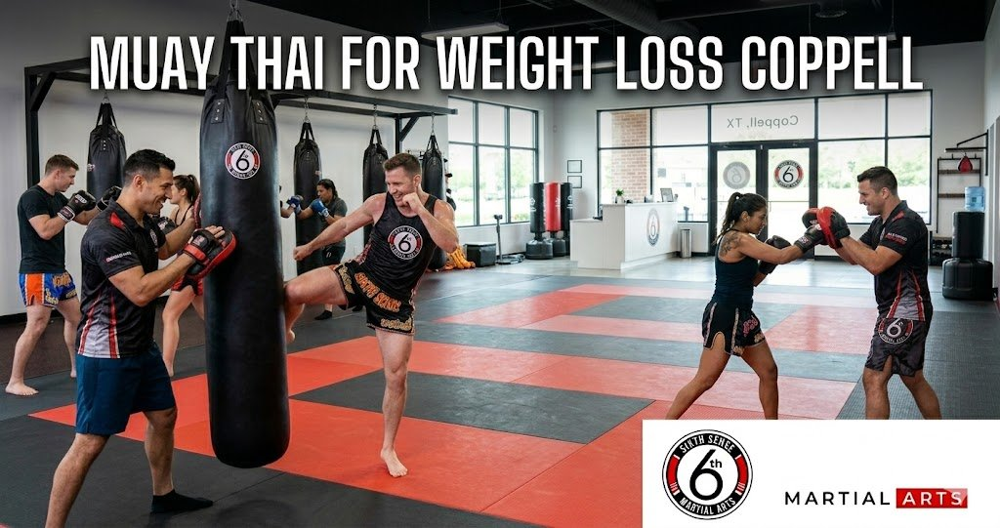
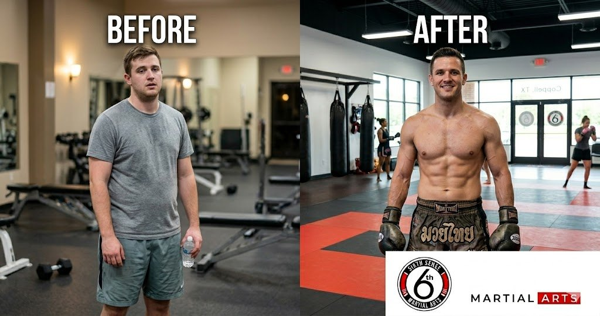
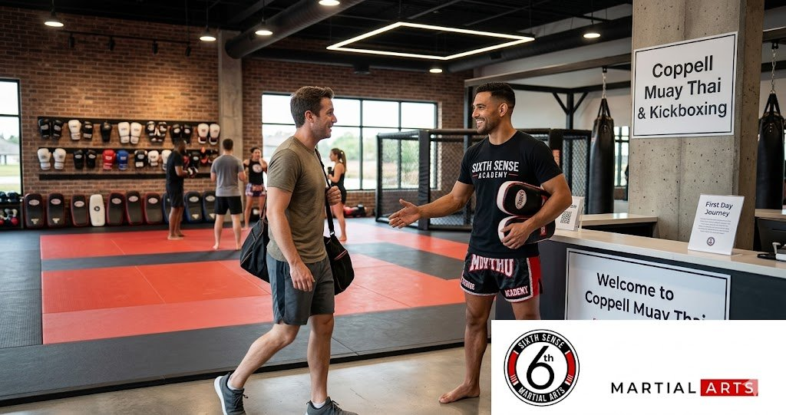

Muay Thai for Weight Loss Coppell: Real Results at Sixth Sense Martial Arts

If you’ve been going to the gym for months and still don’t see the changes you want then you’re not alone. A lot of people in Coppell feel that way. The treadmill gets boring. The weights start feeling pointless. And somehow the weight just stays. That’s where muay thai for weight loss Coppell comes in and honestly it changes everything about how you think about getting fit.
Muay thai isn’t just a martial art. It’s one of the most physically demanding full body workout systems in the world and once you start training you start seeing why so many people in the DFW area are walking away from their regular gym workout and never looking back.
Why Muay Thai Works Better Than Most Ways to Lose Weight
Here’s the thing about muay thai. It doesn’t feel like traditional cardio. You’re not staring at a screen counting down minutes. You’re learning thai boxing combinations on heavy bags and thai pads and your heart rate stays high the entire time without you even noticing because you’re focused on the technique.
That’s what makes muay thai cardio workout sessions different. Your body is working in every direction. You’re throwing punches and kicks and using your knees and elbows and rotating through your core on every single movement. That’s not a regular gym workout. That’s high intensity training that hits your whole body at once.
And when you ask people who’ve been training muay thai consistently for a few months what they notice first it’s usually not even the weight. It’s the muscle tone. The way clothes fit. The fact that climbing stairs doesn’t wind them anymore. The muay thai weight loss results tend to show up in layers and that’s actually a good sign because it means your body is changing in a real sustainable way.
How Many Muay Thai Calories Burned Per Session
Most people are surprised when they find out. A single muay thai fitness workout can burn anywhere from 700 to over 1000 calories depending on your intensity your current fitness level and how hard your coach pushes you. Compare that to a typical 45-minute gym session and the difference is pretty dramatic.
The reason muay thai calories burned numbers are so high is simple. You’re never stopping. Pad training keeps you moving. Bag rounds keep you moving. Even the warm-up in a muay thai class is basically a full cardio session on its own. And because the training style involves so many muscle groups firing at the same time your metabolism stays elevated long after the session ends.
That post-workout burn is something a lot of people overlook when they compare muay thai vs gym workout results. With isolated gym exercises your body recovers fast. With muay thai the recovery itself burns energy because your muscles have been worked in ways they’re not used to.
What Muay Thai Body Transformation Actually Looks Like

So how fast lose weight muay thai? That’s one of the most common questions coaches at Sixth Sense Martial Arts get from new members. And the honest answer is that it depends but most people training consistently three times a week start noticing real changes between weeks four and eight.
In the first few weeks you’re adapting. Your body’s learning the movements and that alone burns a significant amount of energy. By month two most people report that they’ve started to build lean muscle in their legs and shoulders while losing fat in the midsection. By month three to four the muay thai body transformation tends to be visible to people around them not just in the mirror.
That’s not a magic promise. That’s just what happens when you combine high intensity workout sessions with a training system that builds functional strength while keeping your heart rate high across the entire class.
The people who get the best muay thai weight loss results aren’t the ones who train hardest on day one. They’re the ones who show up consistently and let the process work.
Muay Thai vs Gym Workout: Which One Actually Gets You Fit
A lot of people come to Sixth Sense Martial Arts having tried everything. They’ve done gym memberships. They’ve done group fitness classes. Some have tried running programs. And they all say roughly the same thing which is that nothing kept them coming back the way muay thai does.
That’s the muay thai vs gym workout conversation that matters most. It’s not just about calories or muscle tone. It’s about whether you actually show up. And muay thai makes you want to show up because there’s always something new to learn. There’s always a combination to sharpen or a pad session to get through or a technique your coach noticed last week that you’ve been working on since.
The gym doesn’t give you that. A regular gym workout is the same thing on repeat. Muay thai training teaches you something new every single session and that keeps your brain engaged which means your body stays engaged too.
And here’s something plain and simple. When you’re learning to box and kick and defend yourself at the same time you forget you’re exercising. The fat loss kickboxing coppell community at Sixth Sense will tell you the same thing.
The Full Body Workout You Get in Every Class
A single muay thai class at Sixth Sense covers more ground than most people expect. You’re building full body strength through movement not machines. You’re developing functional strength that carries over into daily life. You’re working on coordination balance and reaction speed all while getting what is genuinely one of the most effective high intensity training experiences available in the DFW area.
The class structure at Sixth Sense is designed for all ages and fitness levels. You don’t need years of training to start. You don’t need to already be fit. The certified and experienced muay thai coaches there adjust the intensity to match your current fitness level and goals and they build you up at a pace that reduces training injuries while maximizing results.
A typical session flows through shadow boxing then technique drilling then pad training with a coach followed by heavy bags and thai pads work and a conditioning circuit that builds strength endurance before the cool-down. That structure is how traditional muay thai has always been taught and it’s one of the reasons thai methods have produced some of the most conditioned athletes in combat sports for generations.
You work every part of your body. That’s building full body strength. That’s muay thai.
Muay Thai Fitness in Coppell TX: Why Sixth Sense Is Different
Weight loss martial arts DFW options are everywhere but not every gym gives you the same experience. What makes Sixth Sense Martial Arts stand out is the combination of expert coaching and a community that genuinely wants you to succeed.
The muay thai fitness Coppell TX community at Sixth Sense includes people from all different backgrounds. Some members have never thrown a punch in their life. Others have some previous training experience. And they all train together because the program is built to meet you at your level and take you somewhere better.
Sixth sense martial arts has coaches who understand that you’re not just here to learn a martial art. You’re here to get fit. To lose weight. To build strength. To boost your confidence. And the training teaching they do every class reflects that. They’re not just showing you how to throw a kick. They’re showing you how to build a workout routine that you’ll actually stick with because you enjoy it.
That’s how real fat loss happens. Not through punishment. Through consistency and enjoyment and a training program that makes you want to come back.
Muay Thai Kickboxing for Fat Loss: What the Science Says
There’s a reason kickboxing weight loss Coppell searches are growing. People are finding out that muay thai kickboxing sessions are among the most effective tools available for sustained fat loss. The combination of aerobic and anaerobic effort in a single class means your body shifts between energy systems which creates a metabolic demand that’s hard to replicate in a regular gym setting.
When you keep your heart rate high through pad training and bag rounds you’re doing exactly what the science says works best for fat loss. High intensity intervals with short recovery periods. And in a muay thai class that happens naturally because of the way the rounds are structured.
You don’t need to be an athlete to benefit from this. You just need to start training and commit to showing up.
Common Training Tips to Get Better Results Faster
A few things that make a big difference when you start muay thai. First is training frequency. Three sessions a week is the minimum for visible muay thai weight loss results within the first two months. Two sessions a week will still improve your overall fitness level but the body transformation takes longer.
Second is not comparing yourself to people who’ve been training for years. Your training experience is your own and the progress you make in month one is genuinely impressive even if it doesn’t look like what the advanced students are doing.
Third is managing training injuries. The coaches at Sixth Sense are careful about this. They build you up gradually and they’ll tell you when to rest and when to push. But you have to communicate with them about how your body feels. That’s part of the experience.
And honestly the biggest tip is to stop overthinking it and just start. Most people who want to lose weight through martial arts training spend too much time researching and not enough time on the mat.
How Muay Thai Helps You Build Strength and Confidence Together
One thing most people don’t expect when they start muay thai is how much it affects their confidence outside the gym. There’s something about learning practical self defense skills that changes how you carry yourself. You gain confidence in a way that regular gym workouts don’t really produce because the gym doesn’t teach you anything. Muay thai teaches you something real.
And that confidence compounds. The more consistent training you put in the stronger you feel. The stronger you feel the more you push in class. The more you push the faster your results come. It’s a cycle that works in your favor once it gets going.
You build lean muscle. You build strength endurance. You become stronger and your overall fitness goes to a place it’s probably never been before. That’s the real muay thai fitness workout promise and Sixth Sense delivers on it.
Getting Started with Muay Thai at Sixth Sense Martial Arts in Coppell

If you’ve been thinking about it then now is a good time to move on that thought. Sixth Sense Martial Arts is located at 817 S MacArthur Blvd #100 in Coppell TX and they offer adult muay thai classes designed specifically for people who want real results without needing any prior experience.
You can call them at (469) 972-7800 or send an email to info@sixthsensemma.com to ask about scheduling your first class. There’s no pressure and the first session gives you a real feel for the training environment before you commit to anything.
The muay thai program at Sixth Sense is built for people with new fitness goals and for people who’ve been chasing the same goal for years without getting there. It works for all ages and fitness levels. It works for people who’ve never trained before and for people who’ve tried everything else.
The only thing it requires from you is that you show up and train consistently. Do that and the muay thai body transformation takes care of itself.
Wrapping Up
Muay thai for weight loss Coppell isn’t a trend. It’s a proven training system that has been producing real results for decades and the community at Sixth Sense Martial Arts brings that system to Coppell with coaches who actually care about your progress.
You don’t need perfect fitness. You don’t need experience. You just need to show up and be willing to put in the work. The muay thai cardio workout will handle the rest. And if you want to get fit build strength and crush your fitness goals in a way that actually sticks then there isn’t a better place to start than Sixth Sense Martial Arts.
Call (469) 972-7800. Visit 817 S MacArthur Blvd #100 Coppell TX. Email info@sixthsensemma.com.
The mat is waiting.
Follow Sixth Sense Martial Arts on Instagram: https://www.instagram.com/sixthsensemma
FAQ’s
Yes and it’s one of the most effective options available. A single muay thai fitness workout burns between 700 and 1000 calories depending on intensity and it works your full body in every session. The combination of high intensity training and consistent movement makes it far more effective than most traditional cardio options.
Most people training three times a week start seeing visible changes between weeks four and eight. The muay thai weight loss results are real but they depend on training frequency and nutrition. The more consistently you train the faster your body responds.
For most people yes. Muay thai burns more calories per session than a regular gym workout and because the training style is engaging and skill-based people stick with it longer. Consistency is what produces fat loss and muay thai creates consistency naturally.
Not at all. The muay thai program at Sixth Sense is designed for all fitness levels including complete beginners. The certified and experienced muay thai coaches there build you up from the basics and adjust the training to match where you are right now.
Yes. You can find details on their adult muay thai classes page and reach out directly to ask about class times and availability.
Comfortable athletic clothes and athletic shoes are fine for your first session. The coaches at Sixth Sense will walk you through everything else you need as you get into regular training.
Train with us in Coppell
The first class is free. Shorts, a t-shirt and a water bottle. We lend the rest.
Book a free class